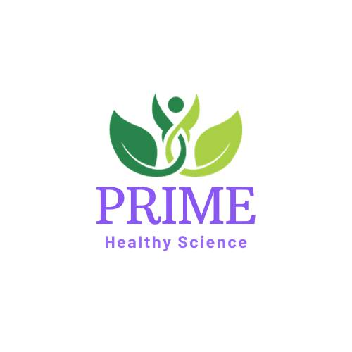
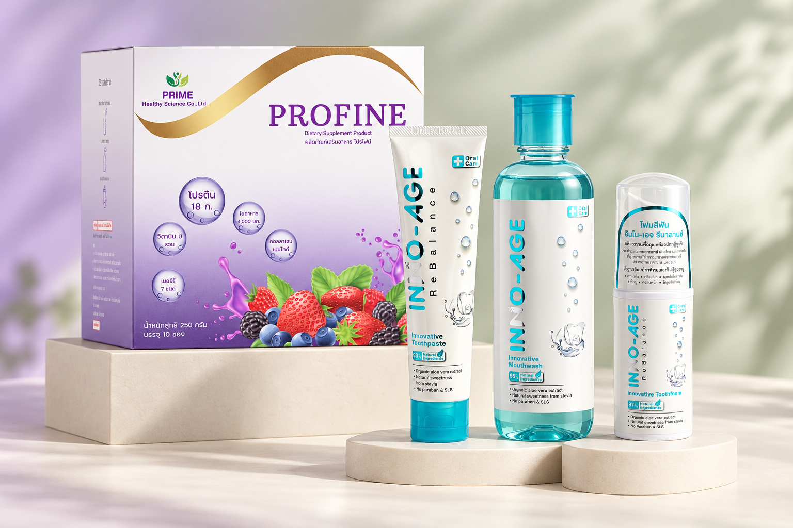

01
BERRY FLAVOUR / 10 SACHETS
DAILY WELLNESS
Profine Collection
โปรไฟน์ ผลิตภัณฑ์เสริมอาหารโปรตีนใส รสเบอร์รี่ โปรตีนจากถั่วลันเตาและข้าว พร้อมกรดอะมิโนจำเป็นอื่น ๆ สำหรับผู้ต้องการเสริมโปรตีน
- โปรตีนจากถั่วลันเตาและข้าว
- รสเบอร์รี่
- แบบกล่องและซอง

PRIMEHealthy SciencePRIME HEALTHY SCIENCE
ผลิตภัณฑ์เสริมอาหารโปรไฟน์ และผลิตภัณฑ์ดูแลช่องปาก INNO-AGE จากความรู้ด้านสุขภาพ สู่การดูแลตัวเองในทุกวัน

01 / ABOUT PRIME
HEALTH · SCIENCE · CAREบริษัท ไพร์ม เฮลธี ไซเอนซ์ จำกัด
เราพัฒนาผลิตภัณฑ์เพื่อสุขภาพโดยผู้เชี่ยวชาญด้านสุขภาพและโภชนาการ บนพื้นฐานของข้อมูลทางวิชาการและงานวิจัย เพื่อให้การดูแลตัวเองเป็นส่วนหนึ่งของชีวิตประจำวัน
นักโภชนาการที่มีประสบการณ์ในธุรกิจอาหารมากกว่า 10 ปี ร่วมกับแพทย์และพยาบาลที่สนใจการดูแลสุขภาพด้วยอาหาร
สูตรอาหารพัฒนาและดูแลโดยผู้เชี่ยวชาญด้านโภชนศาสตร์ โดยใช้ข้อมูลทางวิชาการและงานวิจัยเป็นพื้นฐาน
OUR COLLECTION
สองกลุ่มผลิตภัณฑ์สำหรับการดูแลสุขภาพแบบองค์รวม เลือกดูรายละเอียดสินค้าในแต่ละคอลเลกชัน
DAILY WELLNESS
โปรไฟน์ ผลิตภัณฑ์เสริมอาหารโปรตีนใส รสเบอร์รี่ โปรตีนจากถั่วลันเตาและข้าว พร้อมกรดอะมิโนจำเป็นอื่น ๆ สำหรับผู้ต้องการเสริมโปรตีน
ORAL CARE
อินโน-เอจ ผลิตภัณฑ์ดูแลช่องปากสูตรอ่อนโยน โฟมสีฟัน ยาสีฟัน และน้ำยาบ้วนปาก มีส่วนผสมจากธรรมชาติมากกว่า 90% พร้อมแปรงสีฟันสำหรับการดูแลประจำวัน
ดูรายละเอียดสินค้าและราคาปลีกทั้ง 8 รายการ
เปิดแคตตาล็อกสินค้าWHY PRIME
ดูแลสูตรอาหารโดยผู้เชี่ยวชาญด้านโภชนศาสตร์ โดยใช้ข้อมูลทางวิชาการและงานวิจัยเป็นพื้นฐาน
ผลิตภัณฑ์อาหารผลิตจากโรงงานที่ได้รับมาตรฐาน GHP และ ISO ตามข้อมูลแนะนำบริษัท
ดูแลทั้งลูกค้าทั่วไป ร้านขายยา และสถานพยาบาล ด้วยข้อมูลและการบริการที่เข้าถึงได้
A CLOSER LOOK AT PROFINE
โปรไฟน์รสเบอร์รี่ 25 กรัม
ชงกับน้ำ 150 มิลลิลิตร
โปรตีนจากถั่วลันเตาและข้าว
พร้อมกรดอะมิโนจำเป็นอื่น ๆ
พลังงานต่อหนึ่งซอง
ใยอาหาร
รวมอินูลิน 2 กรัม
ปริมาณน้ำสำหรับชงหนึ่งซอง
ข้อมูลตามเอกสารแนะนำผลิตภัณฑ์โปรไฟน์ · ไม่มีผลในการป้องกันหรือรักษาโรค
THE EVERYDAY EDIT
ทำความรู้จักผลิตภัณฑ์ ส่วนประกอบ
และรายละเอียดก่อนเลือกใช้
LET’S CONNECT
สนใจผลิตภัณฑ์ ต้องการข้อมูลเพิ่มเติม หรือสอบถามสำหรับร้านขายยาและสถานพยาบาล ติดต่อทีมงาน Prime Healthy Science ได้โดยตรง
สอบถามผ่าน FacebookLINE สำหรับสอบถามสินค้า: 0909620620
ดูที่ตั้งและเส้นทางสำนักงานใหญ่
56/6 หมู่บ้าน เค.ซี.รามอินทรา 6
ซอยพระยาสุเรนทร์ 45 แขวงสามวาตะวันตก
เขตคลองสามวา กรุงเทพมหานคร 10510